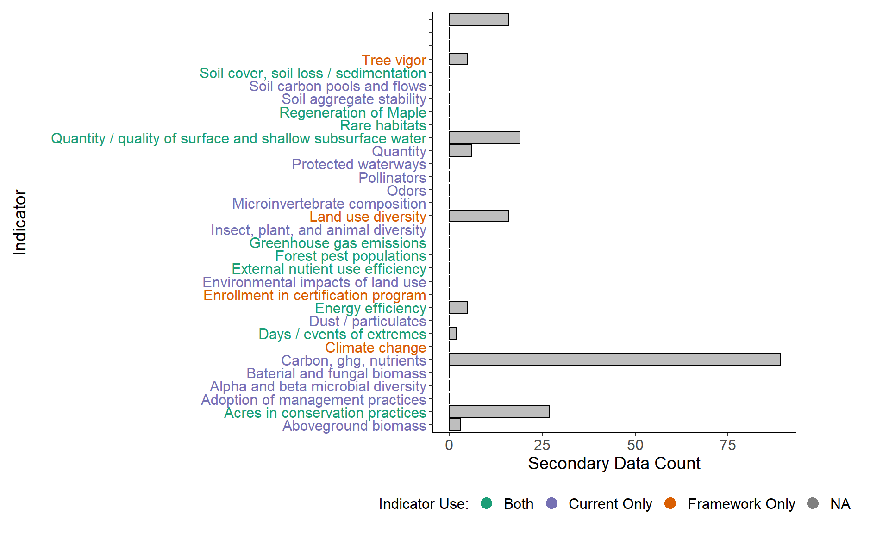
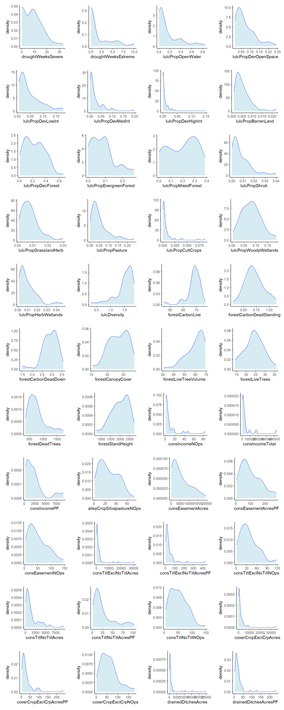
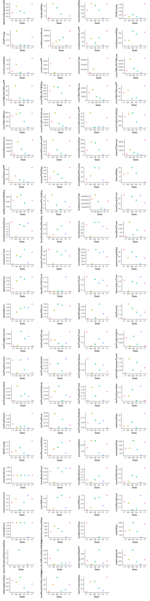
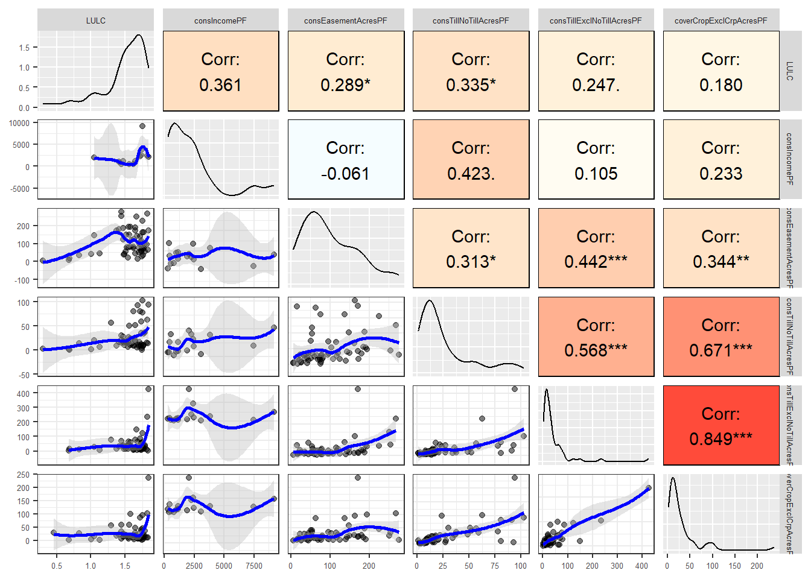

The first plot shows all the environment indicators from both the current studies and the original framework in the y-axis. Purple indicates that the indicator is only being used in the current studies, orange that it is only included in the Wiltshire framework, and green that the indicator is used in both the framework and current studies.
The x-axis shows the number of secondary data metrics that have been collected to represent those indicators. You can see that there are some indicators for which there exist many data, but many indicators for which I have found little to represent them.
NASS figures are used to cover on-farm water use, energy efficiency, and acres in conservation practices. I used the National Aquatic Resource Surveys aggregated at the state level to measure water quality. Land use diversity is pretty well represented by Multi-Resolution Land Characteristics LULC layers, which I also aggregated at the county level. Greenhouse gas emissions come from EPA figures by state, broken down by economic sector. Finally, the USFS TreeMap dataset accounts for aboveground biomass and would do reasonably well in tree vigor. There is more to pull out here than I have so far.
Otherwise, if anyone has ideas for secondary datasets to cover the rest of the indicators, please do let me know.
Code
pacman::p_load( dplyr, ggplot2, stringr, plotly, RColorBrewer)## Load data for tree and metricsenv_tree <-readRDS('data/trees/env_tree.rds')meta <-readRDS('data/sm_data.rds')[['metadata']] %>%filter(dimension =='environment')# Format to match Wiltshire frameworkmeta <- meta %>%mutate(indicator =str_to_sentence(indicator),indicator =case_when(str_detect(indicator, '^Above') ~'Aboveground biomass',str_detect(indicator, '^Water') ~'Water use / irrigation efficiency',TRUE~ indicator ) ) # Counts of secondary data metricscounts <- meta %>%group_by(indicator) %>% dplyr::summarize(count =n())# Join to Wiltshire frameworkcolors <- RColorBrewer::brewer.pal(n =3, name ='Dark2')dat <-full_join(env_tree, counts, by =join_by(Indicator == indicator)) %>%mutate(count =ifelse(is.na(count), 0, count),label_color =case_when( Use =='both'~ colors[1], Use =='wiltshire_only'~ colors[2], Use =='current_only'~ colors[3] ) )# Plotdat %>%ggplot(aes(x = Indicator, y = count)) +geom_col(color ='black',fill ='grey' ) +geom_point(data = dat,aes(x =1, y =1, color = Use),inherit.aes =FALSE,alpha =0,size =-1 ) +scale_color_manual(name ="Indicator Use:",values =c("both"= colors[1],"current_only"= colors[3],"wiltshire_only"= colors[2] ),labels =c('Both','Current Only','Framework Only' ) ) +theme_classic() +theme(axis.text =element_text(size =12),axis.text.y =element_text(color = dat$label_color),axis.title =element_text(size =14),legend.text =element_text(size =12),legend.title =element_text(size =12),legend.position ="bottom",plot.margin =margin(t =10, r =75, b =10, l =10) ) +guides(color =guide_legend(override.aes =list(size =4, alpha =1)) ) +coord_flip() +labs(y ='Secondary Data Count')

Bar Plot of Indicators
1 Distribution Plots
1.1 By County
Note that while most of the available secondary data is at the county level, the environment dimension includes a fair amount at the state level as well. This includes greenhouse gas emissions and water quality surveys. For now, I’ll just show these separately, but some creative aggregation will have to happen eventually.
Code
pacman::p_load( dplyr, purrr, ggplot2, rlang, ggpubr, tidyr)source('dev/data_pipeline_functions.R')source('dev/filter_fips.R')metrics <-readRDS('data/sm_data.rds')[['metrics']]metadata <-readRDS('data/sm_data.rds')[['metadata']]# Use metadata to get help filter by dimensionenv_meta <- metadata %>%filter(dimension =='environment')# Filter to economics dimensionenv_metrics <- metrics %>%filter(variable_name %in% env_meta$variable_name)# env_metrics$variable_name %>% unique# get_str(env_metrics)# Filter to latest year and new (post-2024) counties# And pivot wider so it is easier to get correlationsenv_county <- env_metrics %>%filter_fips(scope ='counties') %>%get_latest_year() %>%select(fips, variable_name, value) %>%mutate(variable_name =str_split_i(variable_name, '_', 1)) %>%pivot_wider(names_from ='variable_name',values_from ='value' ) %>%unnest(!fips) %>%mutate(across(c(2:last_col()), as.numeric))# Save temp file for use in analysis scriptsaveRDS(env_county, 'data/temp/env_county.rds')## Plotplots <-map(names(env_county)[-1], \(var){if (is.character(env_county[[var]])) { env_county %>%ggplot(aes(x =!!sym(var))) +geom_bar(fill ='lightblue',color ='royalblue',alpha =0.5 ) +theme_classic() +theme(plot.margin =unit(c(rep(0.5, 4)), 'cm')) } elseif (is.numeric(env_county[[var]])) { env_county %>%ggplot(aes(x =!!sym(var))) +geom_density(fill ='lightblue',color ='royalblue',alpha =0.5 ) +theme_classic() +theme(plot.margin =unit(c(rep(0.5, 4)), 'cm')) } else {return(NULL) }})# Arrange them in 4 columnsggarrange(plotlist = plots,ncol =4,nrow =11)

Distributions of economic metrics at the county level.
1.2 By State
Code
pacman::p_load( dplyr, purrr, ggplot2, rlang, ggpubr, tidyr)state_codes <-readRDS('data/sm_data.rds')[['fips_key']] %>%select(fips, state_code)env_state <- env_metrics %>%filter_fips(scope ='state') %>%get_latest_year() %>%select(fips, variable_name, value) %>%mutate(variable_name =str_split_i(variable_name, '_', 1)) %>%pivot_wider(names_from ='variable_name',values_from ='value' ) %>%unnest(!fips) %>%mutate(across(c(2:last_col()), as.numeric)) %>%left_join(state_codes, by ='fips')# Save temp data file for use in analysis scriptsaveRDS(env_state, 'data/temp/env_state.rds')# Variables to map. Take out some that didn't come through well.vars <-names(env_state)[-1] %>%str_subset('lakesAcidCond|lakesCylsperEpaCond|lakesMicxEpaCond|state_code|waterIrrSrcOffFarmExp|waterIrrReclaimedAcreFt|waterIrrReclaimedOpenAcres',negate =TRUE )## Plotplots <-map(vars, \(var){ env_state %>%ggplot(aes(y =!!sym(var), x = state_code, color = state_code)) +geom_point(alpha =0.5,size =3 ) +theme_classic() +theme(plot.margin =unit(c(rep(0.5, 4)), 'cm'),legend.position ='none' ) +labs(x ='State' )})# Arrange them in 4 columnsggarrange(plotlist = plots,ncol =4,nrow =17)

Distributions of environmental variables at state level
2 Bivariate Plots
Using a selection of variables at the county level. The variable names are a bit hard to fit in here, but from left to right across the top they are LULC diversity, mean live above-ground forest biomass, conservation income per farm, conservatino easement acres per farm, conservation tillage: no-till acres per farm, conservation tillage: excluding no-till acres per farm, and cover cropping: excluding CRP acres per farm.
Code
pacman::p_load( GGally)# Neat function for mapping colors to ggpairs plots# https://stackoverflow.com/questions/45873483/ggpairs-plot-with-heatmap-of-correlation-valuesmap_colors <-function(data, mapping,method ="p",use ="pairwise", ...) {# grab data x <-eval_data_col(data, mapping$x) y <-eval_data_col(data, mapping$y)# calculate correlation corr <-cor(x, y, method = method, use = use) colFn <-colorRampPalette(c("blue", "white", "red"), interpolate ='spline') fill <-colFn(100)[findInterval(corr, seq(-1, 1, length =100))]# correlation plotggally_cor(data = data, mapping = mapping, color ='black', ...) +theme_void() +theme(panel.background =element_rect(fill = fill))}lower_function <-function(data, mapping, ...) {ggplot(data = data, mapping = mapping) +geom_point(alpha =0.5) +geom_smooth(color ="blue", fill ="grey", ...) +theme_bw()}# Rename variables to be shorterenv_county %>%select(LULC = lulcDiversity,Biomass = meanAboveGrndForBiomass, consIncomePF, consEasementAcresPF, consTillNoTillAcresPF, consTillExclNoTillAcresPF, coverCropExclCrpAcresPF ) %>%ggpairs(upper =list(continuous = map_colors),lower =list(continuous = lower_function),axisLabels ='show' ) +theme(strip.text =element_text(size =5),axis.text =element_text(size =5),legend.text =element_text(size =5) )

It looks like there are a few non-linear relationships, conservation income per farm in particular, but for the most part, linear relationships do a decent job here.
3 Correlations
Only showing correlations by county because we don’t have enough observations to run it by state.
Code
pacman::p_load( dplyr, tidyr, tibble, stringr, purrr, tidyr, ggplot2, plotly, reshape, Hmisc, viridisLite)# get_str(env_county)cor <- env_county %>%select(-fips, -lulcPropNoData) %>%as.matrix() %>%rcorr()# Melt correlation values and rename columnscor_r <-melt(cor$r) %>%setNames(c('var_1', 'var_2', 'value'))# Save p valuescor_p <-melt(cor$P)p.value <- cor_p$value# Make heatmap with custom text aesthetic for tooltipplot <- cor_r %>%ggplot(aes(var_1, var_2, fill = value, text =paste0('Var 1: ', var_1, '\n','Var 2: ', var_2, '\n','Correlation: ', format(round(value, 3), nsmall =3), '\n','P-Value: ', format(round(p.value, 3), nsmall =3) ))) +geom_tile() +scale_fill_viridis_c() +theme(axis.text.x =element_text(hjust =1, angle =45)) +labs(x =NULL,y =NULL,fill ='Correlation' )# Convert to interactive plotly figure with text tooltipggplotly( plot,tooltip ='text',width =1000,height =800)